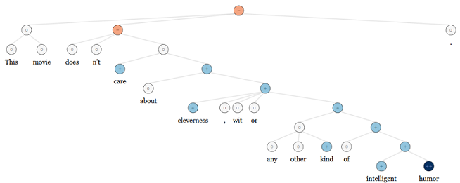

Deep Learning 학습을 위해 CS224d 강의를 보고 강의의 복습 및 정리를 위해 오늘부터 Review 내용을 정리하기로 했다. CS224d : Deep Learning for Natrual Language Processing(이하 NLP) 강의는 Stanford University에서 진행되었고 지속해서 진행되고 있는 강의로 해외뿐만아니라 우리나라에서도 딥러닝 초보 학습자들에게 인기를 모은 강의이다. 현재 2017년에는 CS224n 강의가 새롭게 진행중이지만, 강의 비디오를 볼 수 없는 관계로 youtube에서 강의를 볼 수 있는 2016년 강의인 CS224d를 학습하고 정리한다.
오늘은 Lecture1인 Intro to NLP and Deep Learning 에 대해서 알아보기로 한다.
- Lecture slide : LectureSlide1
- Lecture note : Lecturenote1
- Video Clip : 1강
Lecture1 : Introduction
첫 강좌에서는 기본적인 NLP의 개념, 응용과 딥러닝의 개념 및 응용에 대해서 설명하고있다.
NLP(Natural Language Processing)
NLP는 크게 computer science, artificial intelligence(AI), linguistics(언어학) 분야가 접합된 것으로, 결국엔 컴퓨터가 자연언어를 ‘이해’ 할 수 있게 처리를 해주는것을 의미한다. 본 수업에서는 주로 Syntactic analysis(구문 분석)과 Semantic analysis(의미, 맥락 분석)에 포커스를 맞춰서 수업이 진행된다.
NLP의 응용분야는 spelling checking, keyword search 등과 같이 매우 단순한 분야부터 글의 긍정/부정 분류, 기계 번역, 질문 응답과 같은 어려운 분야까지 다양하게 응용될 수 있다.
NLP에서의 어려운점은 기계는 우리의 언어를 문맥상으로 파악하기 힘든것에 있다. 아래의 예제를 살펴보자
Kim hit Park and then she [fell/ran]
해당 예제의 경우, fell이 선택될 경우에는 she가 지칭하는 것이 Park이 되지만 ran의 경우에는 she가 지칭하는것이 Kim이 된다. 이와 같이 어느 동사가 오느냐에 따라 지칭(refer)하는 것이 달라질 수 있으며, 인간은 이 문장을 문맥상으로 이해하여 찾아낼 수 있지만 컴퓨터는 그렇게 하지 못한다. 또한, 이중적인 문장과 같은 경우도 컴퓨터가 올바른 답을 내놓지 못할 수도 있다.
DL(Deep Learning)
딥러닝은 머신러닝(Machine Learning)의 분야 중 하나로, 요즘 computer vision, speech recognition 등과 같은 분야에서 각광받고 있다. 대부분의 머신러닝 방법은 well defined 된 human-designed representation와 input features에 잘 적용이 되며, 최종 예측을 위해 parameter들을 최적화하는 작업이 주가 된다. 반면, 딥러닝의 경우는 이와 달리 human-designed된 feature도 사용하지 않고, raw한 데이터를 넣어서 features 까지 learning해서 구해버린다. 바로 이점이 딥러닝이 요새 각광받고 있는 이유가 될것이다. 특정 분야에 대하여 features를 만들어서 이를 튜닝하려면 해당 분야의 전문 지식(Domain Knowledge)가 상당히 필요하지만, 딥러닝을 이용한다면 데이터를 통해서 모델이 learn feature itself 를 통해 features를 만들어주므로, 손수 힘들게 features를 만들필요가 없는것이다!! 이를 위해서는 상당한 computing power (learning time을 줄이기 위해)가 필요한데, 최근 CPU/GPU의 발전과 함께 물만난 고기마냥 딥러닝이 높은 성능을 보여주고 있다.
Deep Learning + NLP = Deep NLP
representation learning 과 deep learning 방법을 이용해서 NLP 문제들을 더 좋은 성능으로 풀어보기 위해 NLP에 딥러닝이 적용되었다. 이를 통해서 NLP 각 영역에서 좋은 성능 향상을 이뤄냈다.
-
Phonology(음운체계) 기존에는 위의 표와 같이 정해진 음운체계표를 만들어서 적용을 했지만, 딥러닝이 적용된 현재에는 이러한 음운을 예측하기위해 sound features를 training하고, 결과를 숫자 벡터로 표현한다.
-
Morphology(형태론) 기존에는 위의 표와 같이 단어를 형태소(접두사/어근/접미사 등)의 형태로 나눠서 구분지었지만, 딥러닝을 적용하면서 아래와 같이 각각의 형태소를 마찬가지로 벡터로 표현하여 이를 Neural Network 를 이용해서 두개의 벡터를 하나의 벡터로 combine 하는 형태를 취한다.
-
Semantics(의미론) 기존에는 왼쪽의 그림과 같이 Lambda calculus와 같은 특수한 함수들을 이용한다. 이럴경우 각 단어마다의 similarity에 대한 개념이 포함되지 않는다. 딥러닝을 적용하는 경우는 오른쪽과 같은데 각단어,각구문 모두 이전과 같이 벡터로 표현이 되며, Neural Network를 이용하여 두개의 벡터가 하나의 벡터로 합쳐진다.
-
Sentiment Analysis(감정분석)
This movie doesn’t care about cleverness, wit or any other kind of intelligent humor.

기존의 방법이었다면, Not 의 축약형인 n't 를 보고 이 문장이 부정적이다, 또는 일정한 단어 조합을 통해서 문장의 긍정/부정을 판별했지만 위의 그림과 같이 딥러닝을 이용하면 각 단계에서 긍정과 부정을 조합하여 최종적인 감정(현 문장에서는 부정(-))이 도출된다. 위에 적용된 알고리즘은 RNN(Recursive Neural Network)이다.
사실 해당 판별 결과에서 care와 그 오른쪽 이하의 부분을 합친 결과가 0(중립) 이라고 나왔지만 이는 알고리즘상에서 miss 한 부분이다. care 이하 부분을 읽어보면 +(긍정)에 가깝다고 할 수 있다
Conclusion
이번시간에는 NLP의 기본적인 개념과 응용 분야, 딥러닝의 발전 이유와 함께 실제 NLP에서 딥러닝이 어떠한 방식으로 적용되고 있는지 개략적인 부분을 살펴봤다. 딥러닝이 적용되면서 기존 NLP 방식과 달리 벡터를 이용하여 이를 Neural Network 에 적용해 최종적인 원하는 결과를 도출하는 공통적인 모습을 보았다. 다음시간에는 실제 글자와 단어가 어떻게 벡터로 표현이 되는지 word2vec에 대해서 알아보겠다. 끝~